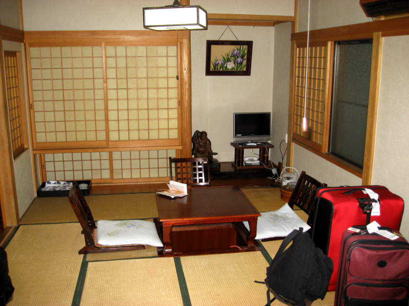
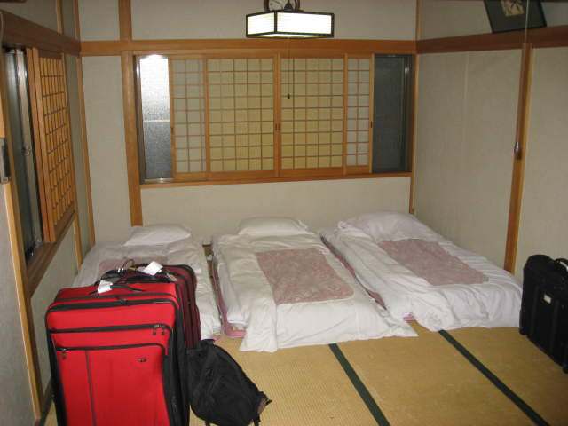
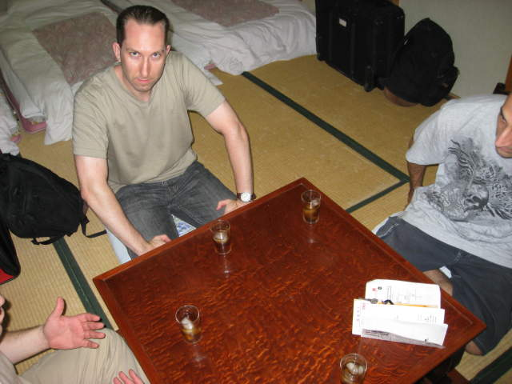
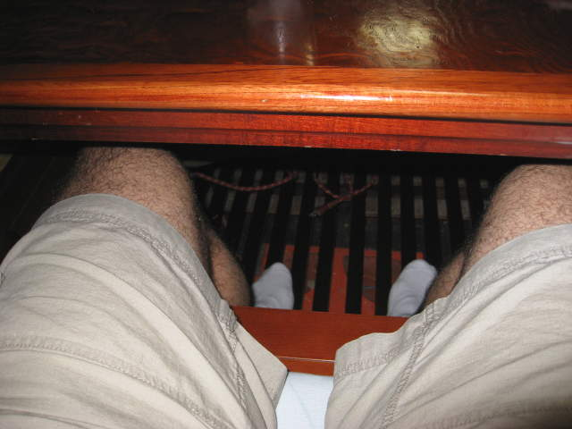
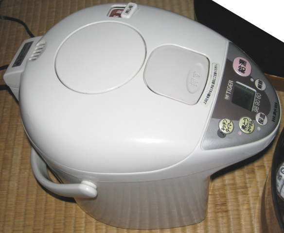
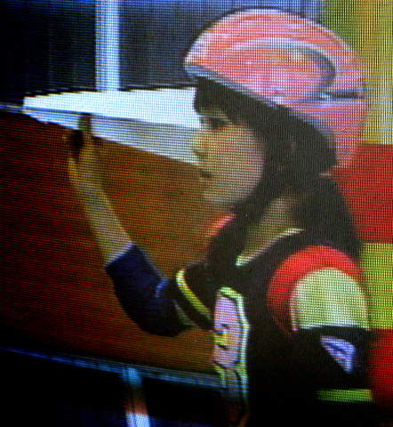

The ryokan
In
Tokyo, we stayed at a Japanese-style hotel called a "ryokan". See
the bamboo floors and sliding paper doors which let you know whether
you're in one or not.

No standard mattresses will be found in ryokans. Three futons were lined up along the far wall.

It is customary to be given tea (iced in the summer) upon the guests' arrival. That's Paul glancing up at the camera.

Underneath some of these tables, there is a pit which lets you sit more comfortably, rather than cross-legged.

This
was my hobby for about 10 minutes, when I tried to figure out what this
device did and how to operate it. I learned it was a hot water
heater, excellent for making tea, and you can set how hot the water
will be. You'll need to convert to Celsius though.

We
flipped around the stations on the television, and this was the show we
fell in love with. There's a sport played by two teams of kids.
One team has a kid with a paper airplane (like a quarterback) and
some teammates with nets. Their goal is to toss the paper
airplane forward and catch it in one of the nets. If it's caught
in the endzone, they score. The other team has big fans, and they
use them to try to blow the paper airplane off-course.
Back